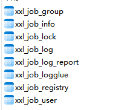
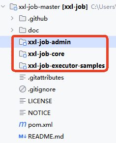
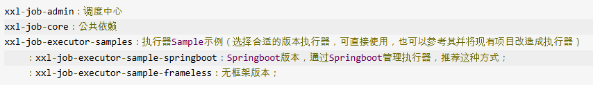
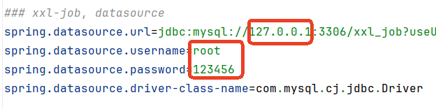
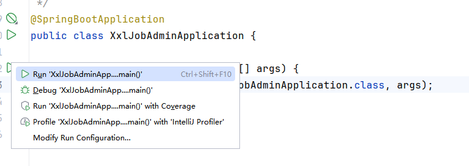
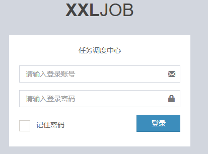
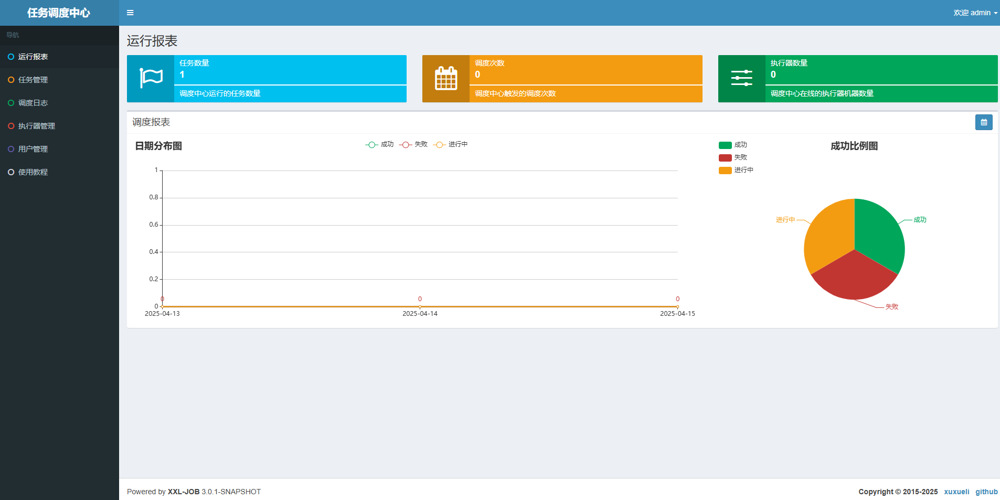

gitee地址：https://gitee.com/xuxueli0323/xxl-job
下载后解压：
sql脚本位置：/xxl-job/doc/db/tables_xxl_job.sql
执行该sql脚本：

将前面下载的源码导入到 IDEA 工具中进行编译。具体操作如下：

官方解释：

调度中心项目：xxl-job-admin
调度中心配置文件地址：/xxl-job/xxl-job-admin/src/main/resources/application.properties
该配置文件当下需要重点修改一下数据源的配置。主要修改：url、username、password。

然后再配置 IDEA 的 Maven，下载项目的 Maven 依赖。

调度中心访问地址：http://localhost:8080/xxl-job-admin (该地址执行器将会使用到，作为回调地址)

默认登录账号 “admin/123456”, 登录后运行界面如下图所示：
